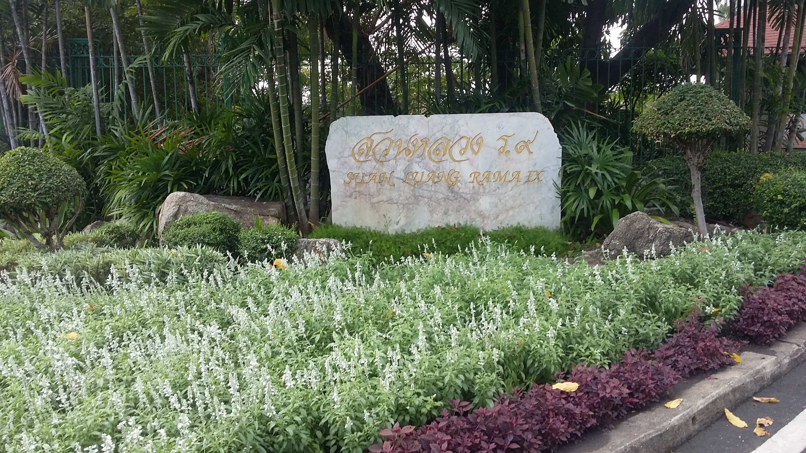
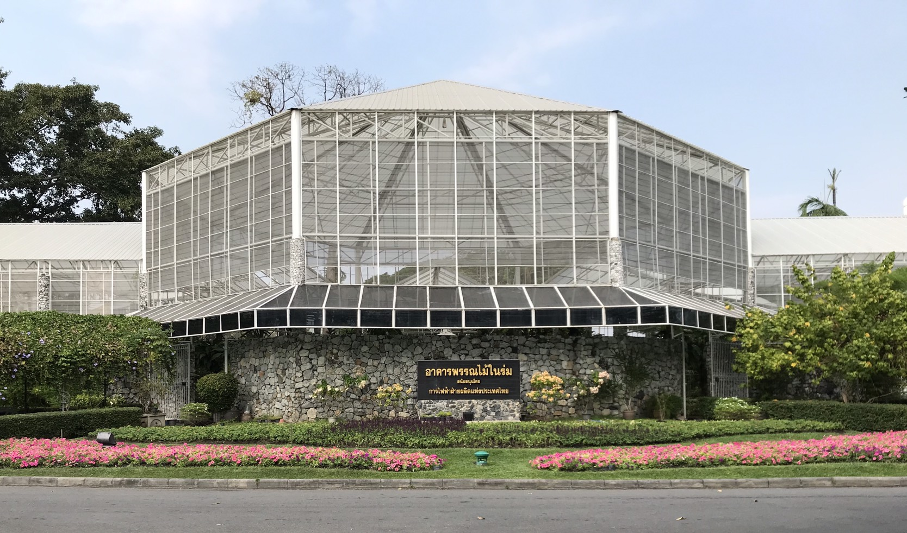

|
|---|


- 1. ประตูราชาวดี อยู่ทางต้นซอยอุดมสุข เป็นทางเข้าสู่สวนรมณีย์
- 2. ประตูพุทธรักษา และ
- 3. ประตูราชพฤกษ์ เป็นเส้นทางไปสู่อาคารสำคัญคือ หอรัชมงคล บริเวณนี้เรียกว่า อุทยานมหาราช ประตูนี้จะเปิดเฉพาะมีการเสด็จพระราชดำเนิน
- 4. ประตูดาวเรือง เป็นเส้นทางไปสู่อาคารถกลเกียรติ
- 5. ประตูมณฑารพ อยู่ทางด้านประตูถนนศรีนครินทร์ เป็นเส้นทางไป สู่ หอพฤกษศาสตร์
- 6. ประตูเฟื่องฟ้า เป็นทางไปสู่สนามราษฎร์
 ลักษณะเด่นของสวนหลวง ร.9 อันดับแรกคือ ประตูทางเข้าออกสวนหลวงร.9 มีทั้งหมด 6 ประตูและปลูกต้นไม้ตามชื่อประตูทั้ง 6คือ
|  |
|---|
ลักษณะเด่นลำดับที่ 2 คือ การแบ่งพื้นที่อย่างมีระบบและเป็นระเบียบ เรียบร้อย สวยงาม พื้นที่ในบริเวณแบ่งออกเป็น 6 บริเวณ ดังนี้
- บริเวณที่ 1 เรียกว่า อุทยานมหาราช มีพื้นที่โอบล้อม 3 ด้าน ด้วย ตระพังแก้ว มีหอรัชมงคล อยู่เกือบกลางพื้นที่
- บริเวณที่ 2 คือ ส่วนที่เป็น สวนพฤกษศาสตร์ ซึ่งทั้งหมด 4 เกาะ
- เกาะที่ 1 เรียกว่า "สวนพฤกษศาสตร์จัดงาน" เป็นบริเวณสำหรับจัด แสดงงานหรือประกวดเกี่ยวกับพันธุ์ไม้
- เกาะที่ 2 เรียกว่า "สวนพฤกษศาสตร์จัดแสดง" บริเวณนี้จะจัดปลูก พันธุ์ไม้ดอกไม้ประดับ เน้นคงวามสวยงาม และมีสวนนานาชาติ
- เกาะที่ 3 เรียกว่า "สวนพฤกษศาสตร์หลัก" เป็นบริเวณที่จัดปลูกต้นไม้ ตามหลักอนุกรมวิธาน หลักนิเวศวิทยา และหลักทางภูมิศาสตร์ มีการจัดแสดงสวน สมุนไพร อาคารแสดงพันธุ์ไม้ในร่วม อาคารแสดงพันธุ์ไม้ทะเลทราย หอพรรณไม้ ห้องสมุด ห้องปฏิบัติการ และที่ทำการ
- เกาะที่ 4 เรียกว่า "สวนดูแลรักษา" ประกอบด้วยโรงเรือนต่าง ๆ เกี่ยวกับการเพาะเลี้ยงต้นไม้ และการดูแลรักษาทั่วไป และสถานที่สำหรับเก็บรักษา พรรณไม้หายาก
- บริเวณที่ 3 คือตระพังแก้ว เป็นบริเวณที่เก็บน้ำเพื่อใช้ประกอบพิธีกรรม ทางน้ำ และใช้เป็นที่พักน้ำท่วมขังบริเวณชานเมืองด้านตะวันออก ก่อนจะระบาย ออกสู่แม่น้ำเจ้าพระยา มีประติมากรรม พระบรมราชินีนาถบุปผาลัย อยู่ริมตระพังแก้ว
- บริเวณที่ 4 คือสวนรมณีย์ เป็นสถานที่จำลองธรรมชาติ ป่า เขา ลำธาร โดยนำหินจากเขาหินซ้อน จังหวัดฉะเชิงเทรา หินจากจังหวัดกาญจนบุรี หินจาก ลำตะคอง จังหวัดนครราชสีมา มาจัด ตกแต่งให้ดูเป็นธรรมชาติ
- บริเวณที่ 5 คือ สวนน้ำ ซึ่งเกิดจากแนวพระราชดำริของพระบาทสมเด็จ พระเจ้าอยู่หัว สมเด็จพระบรมโอรสาธิราสยามมกุฎราชกุมาร และสมเด็จพระเทพ รัตนราชสุดา สยามบรมราชกุมารี ได้เสด็จพระราชดำเนินเยี่ยมศูนย์การพัฒนา พิกุลทอง ตำบลกะลุวอเหนือ จังหวัดนราธิวาส บริเวณนั้นมีพรุอยู่ประมาณ 18 ไร่ เป็นที่มีใบไม้ทับถมอยู่เป็นเวลานานปี มีนกเป็ดน้ำมาอาศัยอยู่มาก ทำให้เกิดความ สวยงาม แก่สถานที่เป็นอย่างมาก พระบาทสมเด็จพระเจ้าอยู่หัวจึงได้มีพระราช กระแสรับสั่งให้จัดทำสวนน้ำขึ้นในสวนหลวง
- บริเวณที่ 6 คือ สนามราษฎร์ เป็นลานเอนกประสงค์ใช้เป้นที่จัดกิจกรรม หรือเป็นสนามกีฬา มีสิ่งก่อสร้าง เช่น สังคีตศาลา กระโจมแตร
- นอกจากบริเวณดังกล่าวนี้ ภายในสวนหลวง ร.9 ยังได้จัดสวนหย่อมไว้ ตามที่ต่าง ๆ ทำให้บริเวณทั่วไปมีความสดชื่น สวยงาม เช่น สวนกำแพงหิน สวน เชิงผา เป็นต้น นอกจากสวนหย่อมแล้ว ยังมี "สวนไม้กล" หรือคือ "เขาวงกต" ซึ่งเป็นศิลปชั้นสูงในการจัดสวนแบบตะวันตก สวนไม้กลในสวนหลวง ร.9 เป็นสวน ไม้กลที่ใหญ่ที่สุดในประเทศไทย
- ลักษณะเด่นที่สำคัญอีกประการหนึ่งก็คือ ศิลปะในด้านสถาปัตยกรรมภายใน สวนหลวง ร.9 คือหอรัชมงคล
- พลับพลาเรือนยอด วีโอเดสิคโดม ศาลาพุฒจันทร์